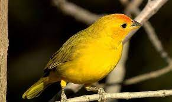
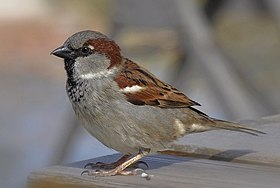
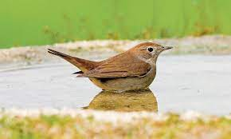

Cacatua fúnebre (Calyptorhynchus funereus) é uma espécie de papagaio da família cacatua que pertence ao Gênero Zanda.
E uma grande espécie de papagaio encontrada no sudeste da Austrália, o comprimento médio desta ave é de 55–65 cm, esta ave tem uma crista curta no topo da cabeça.
Canto do Cacatua fúnebre é uma vocalização que inclue gritos, assobios e guinchos que alcançam volumes bastante elevados. Esses chamados são usados pela espécie para se comunicar entre si.

O canário é um dos passarinhos de companhia mais populares e preferidos dos brasileiros. De tão querido, o simpático bichinho foi o responsável por dar origem ao apelido do time nacional de futebol tupiniquim: a famosa seleção canarinho!

O pardal (Passer domesticus) tem sua origem no Oriente Médio, entretanto este pássaro começou a se dispersar pela Europa e Ásia, chegando na América por volta de 1850. Sua chegada ao Brasil foi por volta de 1903.
O canto é um “chirip”, contínuo e agradável.
O Pheucticus ludovicianus é uma espécie de ave da família Cardinalidae. Eles nidificam na América do Norte e migram no inverno para o México, América Central, Caribe e América do Sul.
O pica-de-bico-preto, também conhecida como pega-americana, é uma ave da família dos corvídeos encontrada na metade ocidental da América do Norte. É preto e branco, com áreas pretas nas asas e na cauda mostrando toques iridescentes de azul ou verde-azulado.
O pisco-de-peito-ruivo ou simplesmente pisco, também chamado regionalmente, pintarroxo, papo-ruivo ou papo-roxo é uma pequena ave que se reconhece facilmente pela mancha alaranjada que lhe ornamenta o peito. É uma ave de canto melodioso e persistente.

O rouxinol, também conhecido como rouxinol-comum, é uma espécie de ave passeriforme anteriormente classificada como um membro da família Turdidae, porém estudos filogenéticos mostraram que a ave pertencente à família dos muscicapídeos, que são restritos ao Velho Mundo.